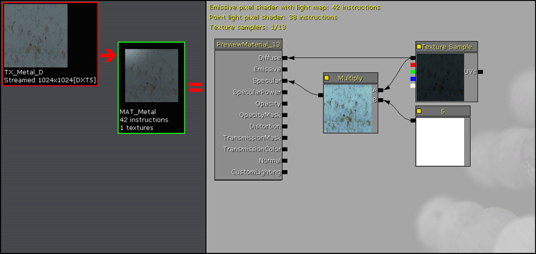
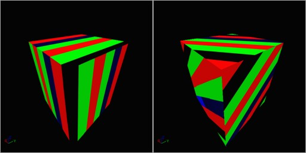

Material Basics
Overview
This tutorial gives a short visual guide to creating the common basic material types. It is assumed that you are familiar with at least Importing Textures in the Generic Browser and the basics of using the Material Editor.
For those who are familiar with level design for Unreal Engine 2.5 and Unreal Tournament 2004, the names given to many of these basic materials in this tutorial will be familiar to you, as they provide similar functionality to their UE2.5 material counterpart.
These basic materials can often be used in combination with each other to produce a more complex material shader.
Detail Texture
The UE3 Material system does not have a Detail Texture property like UE2.5, but it is very easy to create the similar functionality.
Detail textures that are similar to the UT2004 detail textures work very good. These are a seamless tilable grayscale texture that is biased mostly around the middle 127 gray value.
After importing the Detail texture, set its properties for UnpackMax to between 2.0 and 3.0. This increases the unpacked brightness of the texture, which otherwise will usually render the final material darker during the Multiply operation. The default UnpackMax is 1.0.
Set the TexCoord device's UTiling and VTiling to values appropriate for the amount of Detail texture tiling, usually somewhere between 8 and 64 depending on its use.
These Detail textures are useful for both Static Meshes and for Terrain.
Instant Specular
For those shiny metals in your material collection, it is quite easy to add Specular derived directly from the base Diffuse texture itself.
Multiply the Diffuse texture by a Constant value greater than 1 to create a shiny Specular highlight. Constant values between 4 and 8 usually work the best. Values over around 8 start to push the Specular into bloom "glow".
Note: Specular can also be supplied by information in the Alpha Channel of the Diffuse texture if the texture includes that feature, or alternately by another second texture. This allows for custom Specular that can vary from the Diffuse texture itself.
Note: Adding Specular to a material also increases the "depth" quality of any assigned Normal map.

Enhanced Specular
Material Specular derived from the base Diffuse texture as shown above can often look a little flat and unnatural since it applies the specular effect evenly across texture pixels of similar luminance.
To make the Specular stand out more and to also enhance the NormalMap depth, the derived Specular contrast can be increased by using a Power expression.
The Power expression works like a contrast control, where an Exp value of 1.0 is no change, and Exp values between 1.0 and 2.0 increase the contrast.
The greater contrast output of the Power expression is then multiplied to increase the total texture brightness level back to normal. Setting the Multiply's Constant value really high, such as greater than 16 or 32 will usually push the brighter edges of the specular effect into blooming.
Normal Map
Normal Maps, a feature of the newer Unreal Engines, provides 3D detailing to a material.
Import the Diffuse and Normal textures. For the Normal texture be sure to set the CompressionSettings to TC_Normalmap and the LODGroup to TEXTUREGROUP_WorldNormalMap.
Note: Adding Specular to a material also increases the "depth" quality of any assigned Normal map.
Enhanced Normal Map
At times the amount of bump effect provided by a Normalmap texture may be insufficient.
To increase the Normalmap effect, or its visual depth, multiply the NormalMap TextureSample by a Constant3Vector and change the B (Blue or Z) vector to a value below 1.0 such as 0.5 or 0.75.
Increasing the R and G above 1.0 can also increase the Normalmap depth, but with a slightly different visual effect on any Specular in the Material.
Feel free to try values of R and G between 1.0 and 2.0, and values of B between 0.25 and 1.0.
Note that the amount of Normalmap depth can also be decreased by simply leaving the B at 1.0 and lowering the R and G below 1.0. For example an R and G of 0.5 will reduce the Normalmap depth considerably.
Detail Normal Map
In a similar fashion to how Detail textures add additional fine detail to Diffuse textures, a Detail Normal map can add fine detail to Normal map textures. This is most useful when the Normal map texture is a lower resolution such as 512x512, as it adds a fine high resolution bump detail to the final material.
The Noise Normal map is simply a grayscale 1024x1024 texture created in paint software, filled with the gray value 127, then a random pixel noise added to it. This grayscale texture is then processed through the ATI Compressonator or the NVidia nvDXT tools to convert it to a standard Normal map file.
The Constant3Vector device in the Material is set to R=1, G=1, B=0 to remove all of the Blue channel from the Detail Normal map with the Multiply device. This is required otherwise the mixing of the two Normal maps will actually remove the final bump detail. Then the Detail Normal map is added to the main Normal map created for the Diffuse texture to produce a sum of the two Normal map textures.
Self-Illumination / Emissive / Bloom
Unreal Engine 3 supports "pushing" self-illuminating textures so that they light up with a radiant glow. Color values in UE3 range from 0.0 to 1.0. When a color value exceeds 1.0, it is rendered with "bloom".
In this example, a Diffuse texture is imported along with an Emissive texture that determines what areas on the Diffuse are to be self-illuminating. By increasing the color level of the Emissive texture beyond 1.0 , we can force it to glow.
The Emissive texture sample is multiplied by a VectorParameter device, which lets us specify the amount to increase the RGBA values by, pushing the emissive color of the texture into blooming. The RGBA value of 8,0,0,0 in this case causes the Red color to glow.
We could also have used a grayscale Emissive texture, which would then allow the VectorParameter properties to specify any custom emissive color that we wanted simply by entering the appropriate RGBA values.
Texture Panner
The Texture Panner pans the texture at the specified speed in the X and/or Y direction.
The Panner device has two properties that allow you to specify the pan speed and direction: SpeedX and SpeedY. Positive values pan the texture in one direction while negative values pan in the opposite direction. Smaller values pan slowly, larger values pan faster.
Texture Rotator
The Texture Rotator rotates the texture at the specified coordinate offset and speed. The Rotator device has three properties that allow you to specify the rotational center coordinate on the texture and the rotation speed. CenterX and CenterY specify the location on the texture to rotate at, with 0.0,0.0 being the top-left corner, 0.5,0.5 the texture center, and 1.0,1.0 the bottom-right corner. Positive Speed values rotate the texture in the counter-clockwise direction while negative values rotate in the clockwise direction. Smaller Speed values rotate slowly, larger values rotate faster.

Texture Scale / Texture Tiling
Tiling or scaling a texture is one of the simplest functions to perform with a material.
Connect a TexCoord device to the UVs node on a Texture Sample, and specify the UTiling and VTiling property values. A value of 1.0 is the default texture size, smaller values scale larger ie. 0.5 is twice the size or a tiling of 1/2x, larger values scale smaller ie. 2.0 is 1/2th the size or a tiling of 2x.
Masked Material
Masking is used for those materials that have transparent areas on them, such as grates, fences, grass and leaves. There are only a few properties that must be set to obtain the mask.
The transparent areas of the material can be derived from the main diffuse texture itself, or from a second texture such as a monochrome mask or grayscale alpha channel that specifies which pixels are opaque (white or lighter) and which are transparent (black or darker).
The OpacityMask node is connected to the masking source. Set the material properties for BlendMode to BLEND_Masked, the TwoSided checkbox is usually checked (true), and optionally adjust the OpacityMaskClipValue property to obtain the proper edge on the transparent areas. The OpacityMaskClipValue determined the threshold at where pixels are drawn or discarded. Lower values such as 0.1 are towards black (darker colors are not drawn ie. 0.0 through 0.1), while higher values such as 0.6 are towards white (darker through lighter colors are not drawn ie. 0.0 through 0.6).
Translucent Material
Translucent materials are for creating glass and other partially transparent materials. There is a wide variety of styles and Material Expression setups that can be used to achieve a variety of translucency effects. The basics of a translucent material are a diffuse texture sample and an opacity texture sample. By combining the opacity texture into the alpha channel of the diffuse texture, a single 32-bit texture can contain the entire texture requirements.
The Material BlendMode property must be set to BLEND_Translucent. The Material LightingModel property is often set to MLM_Unlit. The Material TwoSided property is usually set to True since glass is usually two sided.
Other variations of the translucent material include:
- Connect the Texture Sample RGB output to the Material Emissive node instead of the Diffuse node. This creates a lit version of the Material.
- Add a Texture Sample to the Material Distortion node to cause the glass to distort the objects behind it. The diffuse or opacity texture or a derived version of them can often be used for this. This requires the LightingModel to be set to MLM_Unlit.
- Add a NormalMap TextureSample and connect that to the Material Normal node to provide some detailed bump.

Important!
You are viewing documentation for the Unreal Development Kit (UDK).
If you are looking for the Unreal Engine 4 documentation, please visit the Unreal Engine 4 Documentation site.